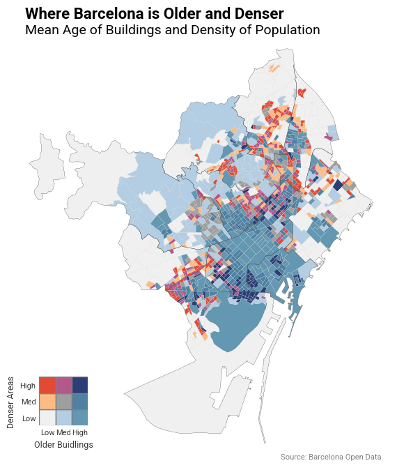
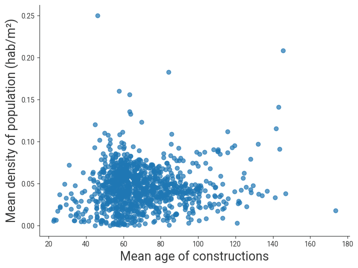
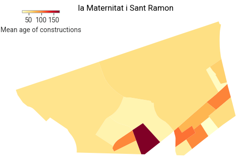

| SEC_CENS | BARRI | DISTRICTE | AREA | geometry | |
|---|---|---|---|---|---|
| 0 | 1 | 1 | 1 | 226854.317 | POLYGON ((2.17575 41.37827, 2.17577 41.37823, ... |
| 1 | 2 | 1 | 1 | 37756.212 | POLYGON ((2.1751 41.37905, 2.17543 41.37877, 2... |
| 2 | 3 | 1 | 1 | 40992.088 | POLYGON ((2.1722 41.37692, 2.17265 41.37681, 2... |
| 3 | 4 | 1 | 1 | 96760.068 | POLYGON ((2.16962 41.37847, 2.17043 41.37779, ... |
| 4 | 5 | 1 | 1 | 60542.195 | POLYGON ((2.17366 41.38071, 2.17407 41.38024, ... |
Population density and building age in Barcelona
data visualization
geospatial
urban data
Python
A bivariate choropleth analysis of how building age and population density interact across Barcelona’s 1,068 census sections.
Barcelona’s urban form carries its history in its buildings. The historic core is dense and old; the outer ring is newer and more spread out — but how clearly does that pattern hold at the census-section level? This project combines building-age data from the Cadastre with population data from the municipal census, joining them onto the official geospatial boundaries to produce a bivariate map.
Data sourced from the Ajuntament de Barcelona Open Data Portal.
Result
The bivariate colour scheme encodes two variables simultaneously: building age (x-axis of the legend) and population density (y-axis). Dark blue-purple = old and dense; light grey = new and sparse.
Full analysis
The complete data pipeline — loading five geospatial datasets, merging them, computing quantile-based bivariate classes, and producing all visualisations — is in the notebook below. It can also be downloaded here.
Density of population and building ages in Barcelona
Libraries
Data
Data is obtained from the Open Data Portal of the Ajuntament de Barcelona, and from a curated GitHub repository containing the geographical information on the partitioning of the city in “Districtes”, “Barris”, and “Seccions Censals”.
| BARRI | DISTRICTE | NOM_BARRI | geometry | |
|---|---|---|---|---|
| 0 | 1 | 1 | el Raval | POLYGON ((2.16471 41.38593, 2.16936 41.38554, ... |
| 1 | 2 | 1 | el Barri Gòtic | POLYGON ((2.17701 41.38525, 2.17873 41.38396, ... |
| 2 | 3 | 1 | la Barceloneta | POLYGON ((2.19623 41.38745, 2.19631 41.38745, ... |
| 3 | 7 | 2 | la Dreta de l'Eixample | POLYGON ((2.17091 41.40182, 2.17221 41.40083, ... |
| 4 | 8 | 2 | l'Antiga Esquerra de l'Eixample | POLYGON ((2.15736 41.39331, 2.15847 41.39245, ... |
| DISTRICTE | NOM_DISTRICTE | geometry | |
|---|---|---|---|
| 0 | 1 | Ciutat Vella | POLYGON ((2.18345 41.39061, 2.18459 41.38976, ... |
| 1 | 2 | Eixample | POLYGON ((2.1869 41.40165, 2.18689 41.40087, 2... |
| 2 | 3 | Sants-Montjuïc | MULTIPOLYGON (((2.14824 41.37623, 2.14896 41.3... |
| 3 | 4 | Les Corts | POLYGON ((2.10342 41.4011, 2.10352 41.40109, 2... |
| 4 | 5 | Sarrià-Sant Gervasi | MULTIPOLYGON (((2.07313 41.43522, 2.07319 41.4... |
| SEC_CENS | BARRI | DISTRICTE | Edat_mitjana | |
|---|---|---|---|---|
| 0 | 1 | 1 | 1 | 100.4 |
| 1 | 2 | 1 | 1 | 108.7 |
| 2 | 3 | 1 | 1 | 110.8 |
| 3 | 4 | 1 | 1 | 95.4 |
| 4 | 5 | 1 | 1 | 119.6 |
| DISTRICTE | SEC_CENS | population | |
|---|---|---|---|
| 0 | 1 | 1 | 1419 |
| 1 | 1 | 2 | 1345 |
| 2 | 1 | 3 | 3710 |
| 3 | 1 | 4 | 3092 |
| 4 | 1 | 5 | 2443 |
<class 'geopandas.geodataframe.GeoDataFrame'>
RangeIndex: 1068 entries, 0 to 1067
Data columns (total 8 columns):
# Column Non-Null Count Dtype
--- ------ -------------- -----
0 SEC_CENS 1068 non-null int64
1 BARRI 1068 non-null int64
2 DISTRICTE 1068 non-null int64
3 AREA 1068 non-null float64
4 geometry 1068 non-null geometry
5 Edat_mitjana 1055 non-null float64
6 population 1068 non-null int64
7 density 1068 non-null float64
dtypes: float64(3), geometry(1), int64(4)
memory usage: 66.9 KBPlots
Bivariate map
| SEC_CENS | BARRI | DISTRICTE | AREA | geometry | Edat_mitjana | population | density | x_group | y_group | xy_group | |
|---|---|---|---|---|---|---|---|---|---|---|---|
| 0 | 1 | 1 | 1 | 226854.317 | POLYGON ((2.17575 41.37827, 2.17577 41.37823, ... | 100.4 | 1419 | 0.006255 | 2 | 0 | 2-0 |
| 1 | 2 | 1 | 1 | 37756.212 | POLYGON ((2.1751 41.37905, 2.17543 41.37877, 2... | 108.7 | 1345 | 0.035623 | 2 | 1 | 2-1 |
| 2 | 3 | 1 | 1 | 40992.088 | POLYGON ((2.1722 41.37692, 2.17265 41.37681, 2... | 110.8 | 3710 | 0.090505 | 2 | 2 | 2-2 |
| 3 | 4 | 1 | 1 | 96760.068 | POLYGON ((2.16962 41.37847, 2.17043 41.37779, ... | 95.4 | 3092 | 0.031955 | 2 | 0 | 2-0 |
| 4 | 5 | 1 | 1 | 60542.195 | POLYGON ((2.17366 41.38071, 2.17407 41.38024, ... | 119.6 | 2443 | 0.040352 | 2 | 1 | 2-1 |

Text(0, 0.5, 'Mean density of population (hab/m²)')
Text(0, 0.5, 'Mean density of population (hab/m²)')
| BARRI | area | Edat_mitjana | population | density | DISTRICTE | NOM_BARRI | NOM_DISTRICTE | |
|---|---|---|---|---|---|---|---|---|
| 0 | 1 | 1100286.139 | 119.895238 | 49917 | 0.045367 | 1 | el Raval | Ciutat Vella |
| 1 | 2 | 815593.939 | 131.933333 | 27878 | 0.034181 | 1 | el Barri Gòtic | Ciutat Vella |
| 2 | 3 | 1179381.956 | 92.836364 | 14749 | 0.012506 | 1 | la Barceloneta | Ciutat Vella |
| 3 | 4 | 1109668.776 | 118.576923 | 22767 | 0.020517 | 1 | Sant Pere, Santa Caterina i la Ribera | Ciutat Vella |
| 4 | 5 | 929355.787 | 70.425000 | 36621 | 0.039405 | 2 | el Fort Pienc | Eixample |
| ... | ... | ... | ... | ... | ... | ... | ... | ... |
| 68 | 69 | 1226952.564 | 33.271429 | 13691 | 0.011159 | 10 | Diagonal Mar i el Front Marítim del Poblenou | Sant Martí |
| 69 | 70 | 1208701.464 | 54.375000 | 30724 | 0.025419 | 10 | el Besòs i el Maresme | Sant Martí |
| 70 | 71 | 1085739.627 | 53.480000 | 21902 | 0.020172 | 10 | Provençals del Poblenou | Sant Martí |
| 71 | 72 | 733989.017 | 61.487500 | 26976 | 0.036753 | 10 | Sant Martí de Provençals | Sant Martí |
| 72 | 73 | 1129978.396 | 54.875000 | 31173 | 0.027587 | 10 | la Verneda i la Pau | Sant Martí |
73 rows × 8 columns
Text(0, 0.5, 'Mean density of population (hab/m²)')
Text(120, 250, 'Mean = 69.4')

| BARRI | NOM_BARRI | DISTRICTE | geometry | |
|---|---|---|---|---|
| 0 | 1 | el Raval | 1 | POLYGON ((2.16471 41.38593, 2.16936 41.38554, ... |
| 1 | 2 | el Barri Gòtic | 1 | POLYGON ((2.17701 41.38525, 2.17873 41.38396, ... |
| 2 | 3 | la Barceloneta | 1 | POLYGON ((2.19623 41.38745, 2.19631 41.38745, ... |
| 3 | 7 | la Dreta de l'Eixample | 2 | POLYGON ((2.17091 41.40182, 2.17221 41.40083, ... |
| 4 | 8 | l'Antiga Esquerra de l'Eixample | 2 | POLYGON ((2.15736 41.39331, 2.15847 41.39245, ... |
| ... | ... | ... | ... | ... |
| 68 | 50 | les Roquetes | 8 | POLYGON ((2.18315 41.45279, 2.18312 41.45271, ... |
| 69 | 53 | la Trinitat Nova | 8 | POLYGON ((2.18872 41.45504, 2.18878 41.45484, ... |
| 70 | 54 | Torre Baró | 8 | POLYGON ((2.18137 41.46144, 2.18173 41.46103, ... |
| 71 | 55 | Ciutat Meridiana | 8 | POLYGON ((2.17959 41.46406, 2.17998 41.46357, ... |
| 72 | 56 | Vallbona | 8 | POLYGON ((2.18407 41.4683, 2.18417 41.46828, 2... |
73 rows × 4 columns
| id | SEC_CENS | BARRI | DISTRICTE | AREA | geometry_x | Edat_mitjana | NOM_BARRI | geometry_y | |
|---|---|---|---|---|---|---|---|---|---|
| 0 | 0 | 1 | 1 | 1 | 226854.317 | POLYGON ((2.17575 41.37827, 2.17577 41.37823, ... | 100.4 | el Raval | POLYGON ((2.16471 41.38593, 2.16936 41.38554, ... |
| 1 | 1 | 2 | 1 | 1 | 37756.212 | POLYGON ((2.1751 41.37905, 2.17543 41.37877, 2... | 108.7 | el Raval | POLYGON ((2.16471 41.38593, 2.16936 41.38554, ... |
| 2 | 2 | 3 | 1 | 1 | 40992.088 | POLYGON ((2.1722 41.37692, 2.17265 41.37681, 2... | 110.8 | el Raval | POLYGON ((2.16471 41.38593, 2.16936 41.38554, ... |
| 3 | 3 | 4 | 1 | 1 | 96760.068 | POLYGON ((2.16962 41.37847, 2.17043 41.37779, ... | 95.4 | el Raval | POLYGON ((2.16471 41.38593, 2.16936 41.38554, ... |
| 4 | 4 | 5 | 1 | 1 | 60542.195 | POLYGON ((2.17366 41.38071, 2.17407 41.38024, ... | 119.6 | el Raval | POLYGON ((2.16471 41.38593, 2.16936 41.38554, ... |
| ... | ... | ... | ... | ... | ... | ... | ... | ... | ... |
| 1050 | 1050 | 16 | 19 | 4 | 26533.586 | POLYGON ((2.14156 41.38653, 2.14264 41.38562, ... | 55.9 | les Corts | POLYGON ((2.13747 41.39144, 2.13877 41.39124, ... |
| 1051 | 1051 | 90 | 27 | 5 | 52964.068 | POLYGON ((2.14645 41.40951, 2.14719 41.40859, ... | 68.9 | el Putxet i el Farró | POLYGON ((2.14838 41.40699, 2.14848 41.4069, 2... |
| 1052 | 1052 | 91 | 27 | 5 | 40719.053 | POLYGON ((2.14315 41.41149, 2.14447 41.41138, ... | 66.5 | el Putxet i el Farró | POLYGON ((2.14838 41.40699, 2.14848 41.4069, 2... |
| 1053 | 1053 | 92 | 27 | 5 | 162177.819 | POLYGON ((2.14264 41.41083, 2.1427 41.41082, 2... | 63.2 | el Putxet i el Farró | POLYGON ((2.14838 41.40699, 2.14848 41.4069, 2... |
| 1054 | 1054 | 93 | 27 | 5 | 28166.117 | POLYGON ((2.13981 41.40682, 2.14038 41.40684, ... | 58.0 | el Putxet i el Farró | POLYGON ((2.14838 41.40699, 2.14848 41.4069, 2... |
1055 rows × 9 columns
BARRI
1 146.9
2 173.5
3 110.6
4 134.1
5 86.9
...
69 49.3
70 78.0
71 70.4
72 101.1
73 86.9
Name: Edat_mitjana, Length: 73, dtype: float64